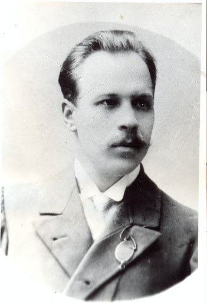

Микола вороний

Блакитна панна
Має крилами Весна
Запашна,
Лине вся в прозорих шатах,
У серпанках і блаватах
Сяє усміхом примар
З-поза хмар,
Попелястих, пелехатих.
Ось вона вже крізь блакить
Майорить,
Довгождана, нездоланна
Ось вона - Блакитна
Панна!..bГори, гай, луги,
поля Вся земляЇй
А вона, як мрія сну
Чарівна,
Сяє вродою святою,
Неземною чистотою,
Сміючись на пелюстках,
На квітках
Променистою росою.
І уже в душі моїй
В сяйві мрій
В'ються хмелем арабески,
Миготять камеї, фрески,
Гомонять-бринять пісні
Голосні
І сплітаються в гротески.